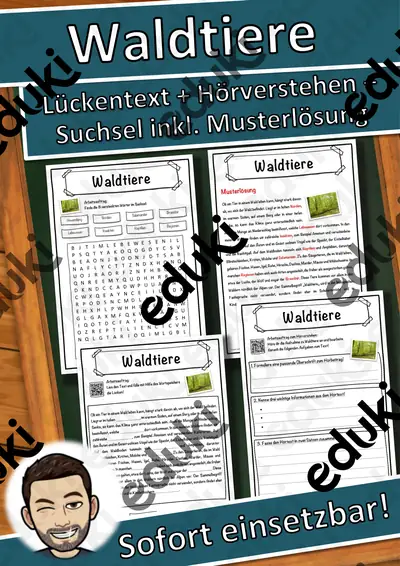

Tiere des Waldes - Steckbriefe inkl. Lösung - Waldtiere - Natur und Umwelt #Silvesterknaller23/24
Mit dem Material Tiere des Waldes - Steckbriefe inkl. Lösung - Waldtiere - Natur und Umwelt erhalten Sie 30 Steckbriefe und 30 Lösungen zu 30 Waldbewohnern in Deutschland.- Amsel- Bachforelle- Biber- Buntspecht- Dachs- Drossel- Eichelhäher- Eichhörnchen- Eule- Feldhase- Fledermaus- Fuchs- Grasfrosch- Hermelin- Hirsch- Igel- Marder- Mäusebussard- Nachtigall- Reh- Ringeltaube- Rotkehlchen- Siebenschläfer- Waldkauz- Wasseramsel- Wildente- Wildkatze- Wildschwein- Zauneidechse#Silvesterknaller23/24
FachBiologie
KlasseKl. 5–7
SchulformSek I Mittlere Schulform
MaterialartStundenentwürfe, Unterrichtsreihen, Arbeitsblätter, Stationenlernen
Ähnliche Materialien

Materialpaket - Tiere des Waldes (Steckbriefe, Infokarten, Bildkarten) - Natur und Umwelt - Waldtiere

Tiere des Waldes - Infokarten - Waldtiere - Natur und Umwelt

Tiere des Waldes - Bildkarten - Waldtiere - Natur und Umwelt

Waldtiere Lückentext mit Wortspeicher Hörverstehen und Suchsel

Das Eichhörnchen – Lesespurgeschichte mit Rätselaufgaben (Klasse 5)

Waldtiere – Hörverstehen mit Lückentext (interaktiv)

Steckbrief zu Papst Leo XIV. inkl. Ausmalbilder